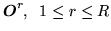
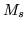
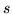
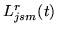

In this style of model training, a set of training observations  is used to estimate the parameters of a single HMM. The basic formula for the reestimation of the transition probabilities is
For a HMM with  mixture components in stream , the means, covariances
and mixture weights for that stream are reestimated as follows.
Firstly, the probability of occupying the  'th mixture component in stream
at time
'th mixture component in stream
at time  for the 'th observation is
for the 'th observation is
Given the above definitions, the re-estimation formulae may now be expressed in terms of  as follows.